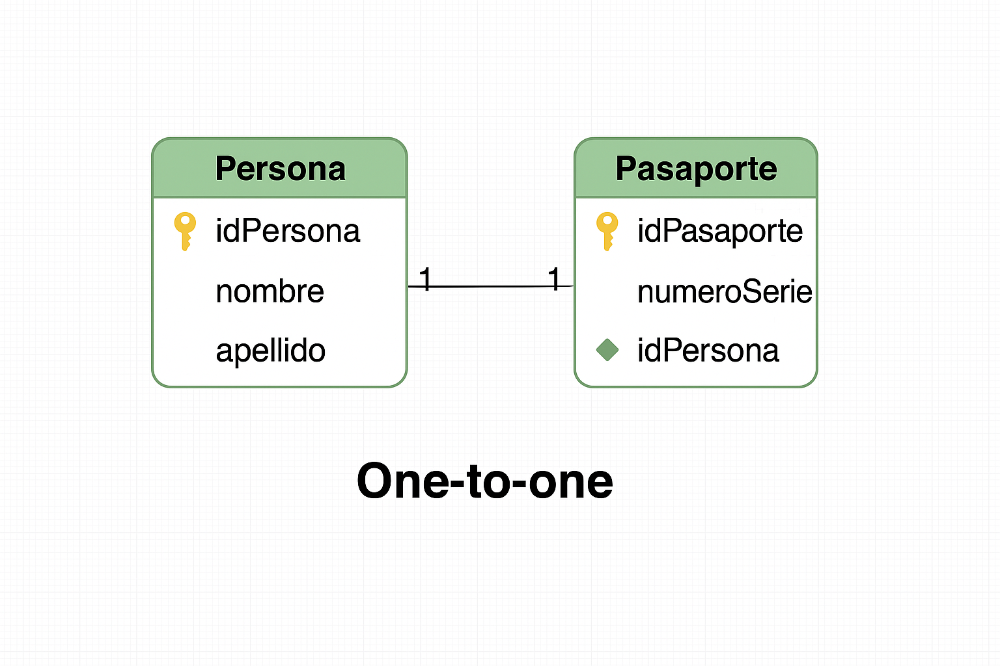
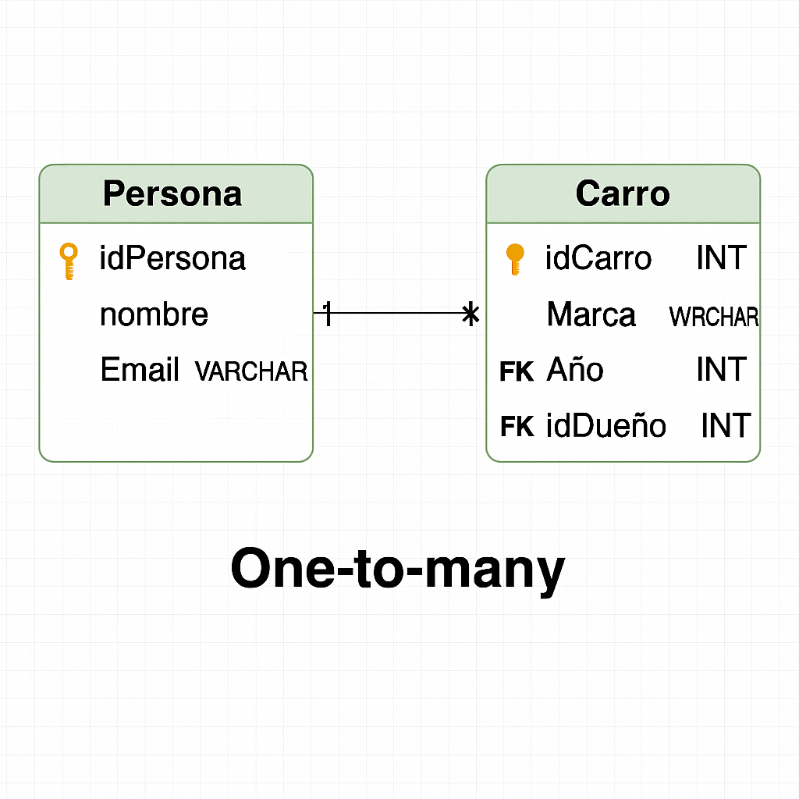
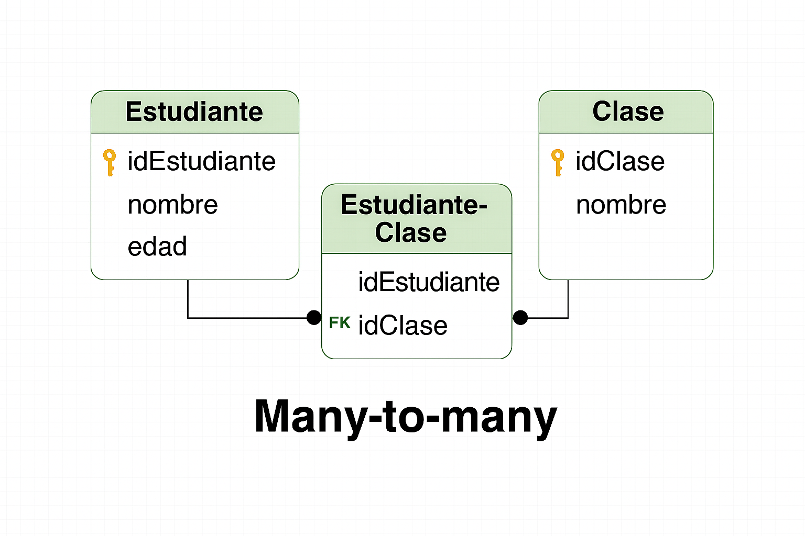
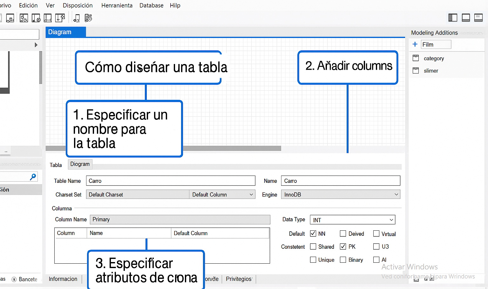

Empezaremos hablando sobre lo que es SQL. es un acrónimo en inglés para Structured Query Language.
Un Lenguaje de Consulta Estructurado. Un tipo de lenguaje de programación que te permite manipular y descargar datos de una base de datos.
Tiene capacidad de hacer cálculos avanzados y álgebra. Es utilizado en la mayoría de empresas que almacenan datos en una base de datos.
Ha sido y sigue siendo el lenguaje de programación más usado para bases de datos relacionales.
Que es un sistema de base de datos
¿Qué es un SGBD? (Sistema de Gestión de Bases de Datos)
Un Sistema de Gestión de Bases de Datos (SGBD) es un conjunto de programas de software especializado que se utiliza para crear, administrar y manipular bases de datos. Este sistema permite definir la estructura de la base de datos (por ejemplo, qué tipo de datos se almacenarán y cómo se relacionarán entre sí), así como ingresar, modificar, consultar o eliminar información de forma controlada.
El SGBD actúa como un intermediario entre los usuarios y la base de datos, asegurando que las operaciones que se realicen sobre los datos sean correctas, seguras y eficientes. Esto significa que el SGBD protege la información frente a errores, accesos no autorizados y pérdidas accidentales.
Además, un buen SGBD garantiza: integridad de los datos: asegura que los datos almacenados sean correctos y coherentes con las reglas definidas. seguridad: controla quién puede acceder a la base de datos y qué operaciones puede realizar. consistencia: asegura que las transacciones (grupos de operaciones) se completen correctamente, o en caso contrario, que no tengan efecto alguno, evitando que la base de datos quede en un estado incorrecto. disponibilidad y rendimiento: permite que múltiples usuarios accedan a los datos simultáneamente sin afectar negativamente la velocidad de respuesta o el correcto funcionamiento del sistema.
Tipos de datos
MySQL ofrece una amplia variedad de tipos de datos que permiten almacenar distintos tipos de información, desde números hasta datos espaciales. A continuación se detallan sus principales categorías:
Datos Numéricos
Estos tipos de datos se utilizan para almacenar números, ya sean enteros o con decimales. MySQL permite elegir el tipo según el tamaño del número que se necesita representar y si requiere decimales o no.
TINYINT: Ocupa 1 byte. Almacena números enteros pequeños (de -128 a 127 con signo, o de 0 a 255 sin signo).
SMALLINT: 2 bytes. Útil para cantidades mayores (de -32,768 a 32,767 con signo).
MEDIUMINT: 3 bytes. Abarca un rango más amplio (hasta ±8 millones aprox.).
INT o INTEGER: 4 bytes. El tipo entero más común (de -2 mil millones a +2 mil millones aprox.).
BIGINT: 8 bytes. Para números muy grandes (hasta ±9 quintillones).
DECIMAL (o NUMERIC): Precisión exacta. Ideal para valores monetarios o cálculos donde se requiere evitar errores de redondeo.
FLOAT: Precisión aproximada en punto flotante. Más rápido que DECIMAL pero menos preciso.
DOUBLE (o DOUBLE PRECISION): Similar a FLOAT pero con doble precisión.
Tipos de Fecha y Hora
MySQL: proporciona varios tipos para manejar fechas y tiempos, fundamentales para registrar eventos, transacciones o programar acciones.
DATE: Almacena una fecha en formato ‘YYYY-MM-DD’.
DATETIME: Almacena fecha y hora en formato ‘YYYY-MM-DD HH:MM:SS’.
TIMESTAMP: Similar a DATETIME pero con zona horaria. Ideal para registrar marcas temporales que se actualizan automáticamente.
TIME: Almacena solo una hora (por ejemplo, '12:45:30').
YEAR: Representa solo un año (por ejemplo, '2025').
Tipos de Cadena
Estos tipos permiten almacenar texto de diferentes tamaños y, en el caso de BLOB, también datos binarios como imágenes o archivos.
CHAR: Cadena de longitud fija. Se rellenan espacios si el texto es más corto.
VARCHAR: Cadena de longitud variable. Más eficiente cuando los textos varían en tamaño.
TEXT, TINYTEXT, MEDIUMTEXT, LONGTEXT: Tipos de texto largo para comentarios, artículos o grandes volúmenes de texto.
Datos Binarios
BLOB, TINYBLOB, MEDIUMBLOB, LONGBLOB: Tipos similares a TEXT, pero diseñados para almacenar archivos binarios (por ejemplo, imágenes, archivos PDF, etc.).
Objetos simples
GEOMETRY: Tipo genérico para cualquier objeto espacial.
POINT: Un punto en el espacio (por ejemplo, una ubicación geográfica).
LINESTRING: Una línea formada por dos o más puntos.
POLYGON: Una figura cerrada, útil para representar áreas.
Colecciones
MULTIPOINT: Múltiples puntos.
MULTILINESTRING: Varias líneas.
MULTIPOLYGON: Varias áreas o zonas.
GEOMETRYCOLLECTION: Colección de diferentes tipos espaciales.
Modelado de Datos
El bb modelado de datos es un proceso fundamental en el diseño de sistemas de información, ya que permite representar de forma visual, lógica y estructurada los datos y las relaciones entre ellos dentro de una organización o sistema. Su propósito es facilitar la comprensión, organización y posterior implementación de una base de datos que sea eficiente, coherente y adaptable a las necesidades reales del negocio o proyecto.
¿Por qué es importante el modelado de datos?
Visualizar claramente los requisitos de información del sistema.
Establecer la estructura lógica de los datos antes de construir físicamente la base de datos.
Identificar problemas potenciales de diseño, como redundancias, dependencias innecesarias o relaciones incorrectas.
Asegurar que los datos estén organizados de manera que faciliten la consulta, actualización y gestión eficiente.
Reducir errores y costos en etapas posteriores del desarrollo.
Tipos de Modelado de Datos
Modelo conceptual: Representa la estructura general de la información sin entrar en detalles técnicos. Utiliza herramientas como el modelo Entidad-Relación (ER) o su versión extendida (EER, Entidad-Relación Extendida). Identifica entidades (objetos importantes), atributos (características) y relaciones (cómo se vinculan las entidades).
Modelo lógico: Traduce el modelo conceptual a un formato lógico compatible con un tipo específico de base de datos (por ejemplo, relacional). Define tablas, claves primarias, claves foráneas, tipos de datos, restricciones, normalización, etc.
Modelo físico: Detalla cómo se almacenarán los datos físicamente en un sistema de gestión de bases de datos (SGBD), como MySQL. Incluye consideraciones de rendimiento, índices, almacenamiento y configuraciones específicas del sistema.
Tipos de Relaciones
En el contexto del diseño de bases de datos, especialmente cuando se utilizan modelos relacionales, las relaciones entre tablas permiten vincular datos que están distribuidos en distintas entidades. Estas relaciones definen cómo interactúan los datos y son fundamentales para mantener la integridad y la eficiencia del sistema.
Existen tres tipos principales de relaciones:
Uno a Uno (1:1)
Cada registro en una tabla está relacionado con exactamente un solo registro en otra tabla, y viceversa. Aplicaciones típicas:
Datos que se desean separar por seguridad o privacidad (por ejemplo, información médica).
Datos que no siempre se aplican a todos los registros (como un pasaporte en personas: no todas lo tienen).
Dividir información por motivos de rendimiento.
Cómo se implementa: Usualmente mediante claves primarias compartidas, donde la clave primaria de una tabla es también clave foránea de la otra.

Uno a Muchos
Definición: Un solo registro en la primera tabla puede estar vinculado a múltiples registros en la segunda tabla. Sin embargo, cada registro de la segunda tabla solo puede estar relacionado con un registro de la primera. Cómo se implementa: La segunda tabla (el lado “muchos”) incluye una clave foránea que hace referencia a la clave primaria de la tabla del lado “uno”.

Muchos a Muchos
Definición: Un registro en la primera tabla puede estar relacionado con muchos registros en la segunda tabla, y viceversa. Cómo se implementa: Este tipo de relación requiere una tabla intermedia o tabla puente (también llamada tabla de unión o junction table), que contiene las claves foráneas de ambas tablas principales.

Diseño de Tablas
En MySQL, el diseño de tablas es crucial para organizar y almacenar datos de manera eficiente y estructurada. Las tablas son la base de cualquier base de datos relacional y permiten almacenar información en filas (registros) y columnas (campos). El diseño de tablas implica definir la estructura de cada tabla, incluyendo los tipos de datos de las columnas, las claves primarias y foráneas, y las relaciones entre tablas.

Consultas Básicas
Las consultas básicas en Mysql sirven para manipular datos en las tablas creadas,
estas consultas también denomidanas como sentencias SELECT
Haz clic en los botones de abajo
Referencias investigativas:
aquí.
Elmasri, R., & Navathe, S. B. (2016). Fundamentals of Database Systems (7th ed.). Pearson.
Connolly, T., & Begg, C. (2014). Database Systems: A Practical Approach to Design, Implementation, and Management (6th ed.). Pearson.